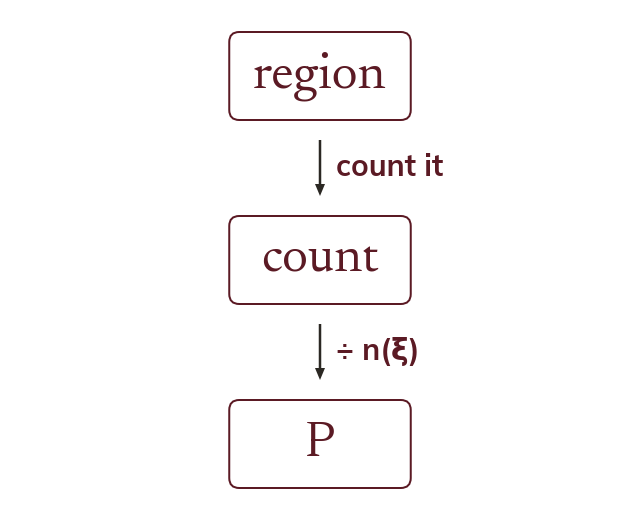

The rule
P(region) = its number of elements ÷ n(ξ). Never divide by any other total in the diagram.
the probability of landing in a region equals the number of elements in that region divided by n(ξ), the total number of elements in the universal set – never by any other total in the diagram.